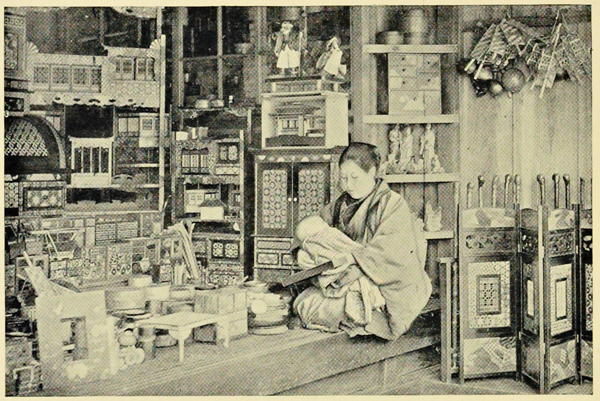

“A dealer in inlaid woodenware”
Japan: Described and Illustrated by the Japanese (1897)
We have been in the shops picking up odds and ends of old things; delightful bits of carved ivory and old bronze are to be had still, but the day for getting them cheap has gone by; the prices they ask now are, we are told, ‘enough to make one’s back ache.’
Journal of a Lady’s Travels Round the World (1883)
The shops are very enticing—charming old embroideries, chiefly the court costumes of the nobles, who in this wonderful country were going about in gorgeous medieval garments like splendid knaves of diamonds, girt about with two swords, till the other day, when all of a sudden the official and court-dress was changed into a Methodist parson’s frock-coat and white tie; and we foreign barbarians now buy the gorgeous garments and beautiful swords as ‘curios.’
Journal of a Lady’s Travels Round the World (1883)
Merchants are privileged to wear one sword. They form the most solid and reliable part of the community. Silk-merchants occupy the largest stores. The beautiful silks and crapes manufactured in this country are not exposed to view like the more common cotton fabrics, but are kept shut up in the storerooms. At the other dry-goods stores the goods are displayed on the shelves, the floor, or are hung up by the door-post. There are shops where more trifling articles are kept for sale, such as hairpins, combs, powders and paints, and articles used in worship. There are large tea and rice establishments, and groceries, where beans, eggs, etc., are sold. Confectioners’ shops may be found, where children buy candy made of rice, beans and paste colored with seaweed. We see large china-stores, and are interested in the toy-shops filled with pretty things for the children, and in the book-stores, where the curious literature of the country is sold to those who wish to read.
We find, too, a class in which the merchant and the artisan mingle their callings—those employed in the manufacture and sale of umbrellas, shoes, fans, lamps, tables, chests of drawers, mats and other things, all exhibiting great skill and exquisite neatness. There are carpenters and smiths, masons, stone-cutters, lapidaries, and carvers in wood and ivory. Many are employed in making the beautiful lacquered articles, turning bronzes and manufacturing china-ware in every conceivable style.
The Sunrise Kingdom (1879)
A bookseller’s shop was the scene of my first purchase. One sits down on the doorstep, or the counter, or the floor—they are much the same. The proprietor leaves his work at the back of the shop, and, coming forward, drops on his knees and bows profoundly. I return the salute after the manner of my people. A pause ensues. There is difficulty in beginning a conversation. Opening a book, I point to the pictures; he comprehends, and brings me a selection of his wares. After choosing a few, I spring upon him one of the very few Japanese words I picked up on the voyage—“Ikura?” or “How much is this?” He answers in one of the tongues of Babel! Somehow I do not catch his meaning as well as he understands mine; and yet I thought I knew how to count in Japanese. “Ikura?” I say again. A profound bow, and the same unmeaning words. How stupid a strange language sounds! I look reflective, as if studying the question from a mercenary standpoint, and slowly shake my head. He is respectful, but firm. Over the face of his wife I fancy a smile crept, as if she penetrated my absolute ignorance. Finally I take a bit of paper and make signs for him to write down the price, which he does—in Chinese! However, I give him a bit of money, out of which he returns such a surprisingly large amount of change that I fear he has made a mistake in calculating. ’Tis no time for explanations. We part with distinguished salutations.
Rambles Through Japan Without a Guide (1892)
We stopped that afternoon at the principal silk and crape shop to buy a few presents for our people at home. The shop was open to the street and fringed with dark cotton hangings. We sat on the edge of the floor, about a foot above the street, but did not go inside, as we did not want to take off our shoes. After about half-an-hour’s vigorous explanation from my brother, all we could wish for was produced; but it must be confessed that Japanese shopping is a decidedly lengthy business. First, a pipe is offered you; then tea; then the least attractive goods are produced; and at last, after much bowing on both sides, the very thing you have desired from the first; but even then it will not be yours until it has been bargained down to a reasonable price.
Japan As We Saw It (Bickersteth) (1893)
Such is the native taste for artistic forms and groupings of objects, that even the commonest shops first arrest the eye with masses of brightness and colour, and then amuse the mind with curious and fanciful details. An ordinary Japanese china shop is as entertaining an “arrangement in blue and white” as one of the cabinets of Governor Pope Hennessy at Hong Kong, or of Sir Henry Thompson in Wimpole Street. And the leisurely shopkeepers, male or female, or both, inhaling frequent whiffs of tobacco with philosophic calmness, and yet always alert, and always courteous to the visitor, add to the pleasing attractiveness of the place, contrasting with the eager money-grasping habits that one gets too much accustomed to in other lands.
Japan: Its History, Traditions, and Religions (1880)
The typical Japanese shopkeeper often sets the calmest nerves on edge and tries the most saintly patience. In the first place, he does not want to keep his shop. All matters of trade and barter being considered demeaning by his countrymen, his attitude towards business is languidly indifferent, towards customers slightly hostile. He makes it a rule never to urge, induce, or otherwise encourage any one to buy anything, and to gently discourage if he can. The experience of a lady in Yokohama, who went into a shop to look for some expensive brocade, will serve as a typical example of his methods. “Have you any good brocade?” said she to a little man who came slowly forward with an air of abstraction—as if inwardly contemplating Nirvana and praying that he might not be long disturbed from higher things. “Yes, we have,” he wearily replied. “Well, will you get them out and let me see them?” “Yes, if you are sure you want to buy!” said he with a resigned sigh.
Behind the Screens (1910)
The last few days have been spent principally paying our final visits to the curio shops, the charms of which I have never alluded to, though much time has been spent in rummaging over these interesting stores of lacquer, bronze, porcelain, and all manner of pretty and curious things. Such researches are very amusing so long as you do not particularly care whether you buy anything or not, and to the sellers also, it often appears a matter of such pure indifference, they sit quietly warming themselves over their boxes of charcoal, hardly making a remark, while all their goods are being investigated. When, however, one really wants to make a purchase, they ask such large prices, that in trying to bring them to reasonable terms, a great deal of time and much conversation has to be expended.
Letters from China & Japan (1875)
Very few foreigners, whether visitors or residents, ever visit the markets. But everyone goes at least once or twice to visit a fair—ennichi, as they are called, or matsuri. Most districts in Tokyo have one of these evening entertainments once or twice a month. The ennichi with which I am most familiar is always held on the 4th, 14th, and 24th. About five o’clock the vendors arrive with their little booths, which they set up along the sides of the street. There is practically no horse traffic in Tokyo. By six o’clock all is prepared, and by seven the entertainment has reached its height. It is a grand opportunity for buying bargains in all sorts of out-of-the-way lines. There is a crockery dealer with cups and teapots with some little flaw about them that has caused their rejection by the shops; there is a vendor of curios—cheap, dirty, occasionally, by some strange chance, good; at another stall is an odd-looking collection of old boots, and spread out on a mat near by, a stranger assortment of ancient but not venerable books. The brightest stalls belong to the dealers in artificial flowers, combs, hair-pins, and children’s toys. These are always surrounded by children, as are also the glass bowls of gold-fish, which gleam and flash in the light of the many flaring lamps. But the people who do the real business are the gardeners and florists, who have brought cart-loads of bushes and flowering shrubs from their homes in the suburbs. When a tree takes your fancy you ask the price, the vendor asks three times what he is prepared to take, and you offer half of what you would be willing to give; the rest is a contest of words, and eventually you go home without your plant. About eleven o’clock, when the fair is about to close, and the florist is afraid that he must cart his bushes all the long weary way home again, your cook or betto (groom) goes out to have a look round, and the next morning you find that the plant is yours at half the price which you originally offered.
Every-day Japan (1909)
It is a great mistake to defer any shopping in Japan, with the hope that you will find the same things in another place, and thus avoid the trouble of carrying your purchases. As a fact, there seems very little trade between the various centres of industry in Japan; the tortoise-shell work of Kobe and Nagasaki, the inlaid woods of Miyanoshita, and the straw work of Arima, seem confined to the places of production, and the goods, if exported at all, are supplied direct from them to the foreign market. For instance, I never came across a good specimen of Miyanoshita inlaid-wood-work from the time that I was in the village itself, until I discovered one last summer at the Army and Navy Stores in London though at treble its original cost.
Japan As We Saw It (Bickersteth) (1893)
There is at the back of the western end of the settlement of Yokohama a street which is probably to every visitor the most distinctive feature of the place; it is called by the natives the ‘Benten-Tori,’ or ‘Benten-Doré,’ but is known among English and Americans as ‘Curio Street.’ It is almost needless to say that it owes its origin entirely to the liking which foreigners have shown for Japanese articles in lacquer and porcelain, and is lined on both sides with a succession of curio-shops.
To anyone with a taste for Japanese ‘objets de vertu,’ there can be no place so well calculated to feast his eyes and empty his purse. There he may sit down in a perfect ‘embarras de richesses,’ consisting of cabinets of ivory, delicately carved and overlaid with gold lacquer; card-trays, card-boxes, glove-boxes, carefully lacquered in black, and wrought with graceful and life-like representations of birds, flowers, and insects; little figures, carved in ivory, inimitable in their grotesqueness of expression, called by the natives ‘nitskis,’ and used as buttons to prevent their tobacco-pouches from slipping out of their girdles; ivory fans, bronze ornaments of all kinds; other rare wares, such as the ‘cloisonée;’ cups and saucers, vases and dishes, in china, of all colours and qualities; besides a host of other articles which it would be both difficult and tedious to enumerate.
But let none venture in among this seductive array without having both a long credit and some skill in discriminating between the different qualities of the articles; for, on the one hand, contrary to ideas prevalent in England, good lacquer or ivory-work is not to be bought for a mere trifle in the land of its production, the native gentry having as high an appreciation, and being ready to pay almost as long prices for it, as ourselves; and, on the other hand, since the demand for these articles has increased so much by the irruption of foreigners into the market, articles of a much inferior workmanship are manufactured, and palmed off on the unwary or ignorant as equal to the oldest and best.
Round the World in 1870 (1872)
We gave the afternoon to hunting the old curiosity shops, of which there are a few at Nara which I can strongly recommend to those who desire to possess themselves of some of the remaining antiquities of Japan. It is quite a mistake to suppose that all the old and curious and valuable things have been bought up; there are many remaining, and to those who care for them the twenty-six miles’ run from Osaka in a jinriki will be well repaid by a few days spent in this ancient, historic, and most charming city of Nara.
Japan: Its History, Traditions, and Religions (1880)
Mrs. Foss kindly accompanied me in a shopping expedition to the Moto Machi, a long and well-known street in Kobe, full of china, lacquer, bamboo, and paper shops. The various articles made in Japan from paper are truly astonishing; they vary from windows to pocket-handkerchiefs; and a ball of coloured paper string which I bought that day in the Moto Machi is so like good strong English twine that our friends at home have to take on faith the fact that it is genuinely made out of paper.
Japan As We Saw It (Bickersteth) (1893)
Across the street is a photographer. His negatives in frames lean against the steps outside, or wherever a bit of sunlight can be had. Here I am more fortunate as to conversation; his replies to my “Ikura?” I really understand. Photographs are always of interest, and his are surprisingly cheap—a penny each. As my purchase seems likely to be considerable for him, he determines to treat, and sending out a servant, she returns with two glasses of iced-water, which we drink to our better acquaintance. A crowd gathers about the door, the eager jinrikisha-man, idle apprentices, young girls with babies strapped on their backs. It would seem that even in Yokohama the stray foreigner is something of a curiosity. How courteous and polite these shopkeepers are! Paris even is outdone. But, then, it is never very difficult to spend money, whether or not one knows the language.
Rambles Through Japan Without a Guide (1892)
Nurse Grace took me to Yokohama, to choose a number of photographs of the various places we had already seen. Japanese excel in photography, especially in the art of colouring. They do not paint the photograph when complete, but add the colour while it is still half-developed, and the effect is extremely good. They charge very little for their photographs, two yen (about 6s. 8d.) for two dozen large coloured ones, and rather less for uncoloured. We soon made a delightful collection of different scenes of Japanese life and of the places we had visited. It was curious to notice that any photograph of costumes previous to the Revolution (1868) was marked “ancient times.”
Japan As We Saw It (Bickersteth) (1893)
I plead guilty ... to a partiality for Japanese bookstores, and I have seen great changes in them during my time. A bookstore in Tokyo used to be run on the principle that every man who came to it was a probable thief, and to be kept as far as possible from contact with books. You had to go to a shop with your mind set on a definite book that you wanted to purchase, and if that particular volume did not happen to be in stock your business came to a sudden close. It was no part of the bookseller’s duty to suggest another that might possibly do, very often he did not possess the knowledge to enable him to do so; but, in any case, he did not want you to go overhauling his stock. But one or two shops tried the experiment of letting their customers walk freely among their books, and the innovation paid so well that now you can get round most shops and freely examine a book before you buy it. Tokyo is very well supplied with books, and I am often surprised by the finds I make. Not long ago I discovered on a bookshelf an Icelandic Grammar standing side by side with a largish consignment of some fifteen or sixteen Roumanian conversation-books!
Every-day Japan (1909)
◀ MoneyTea houses ▶